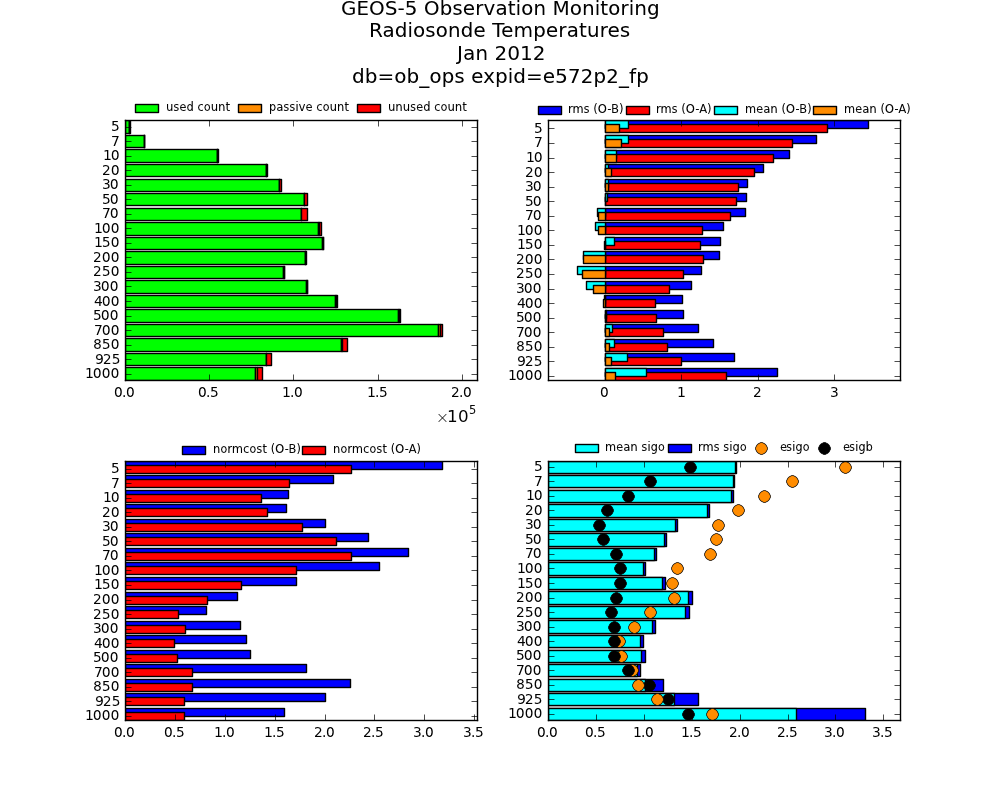
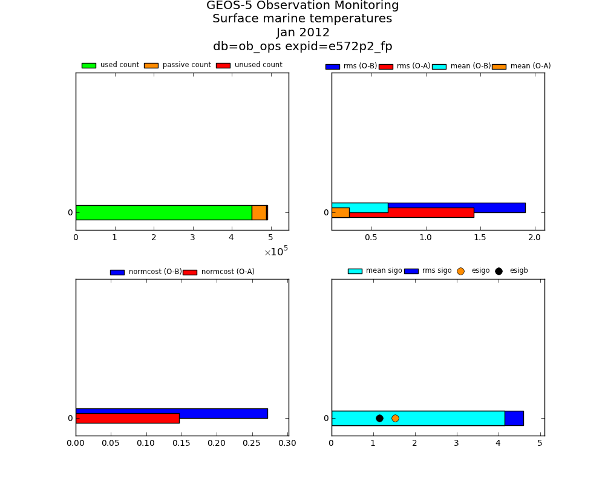
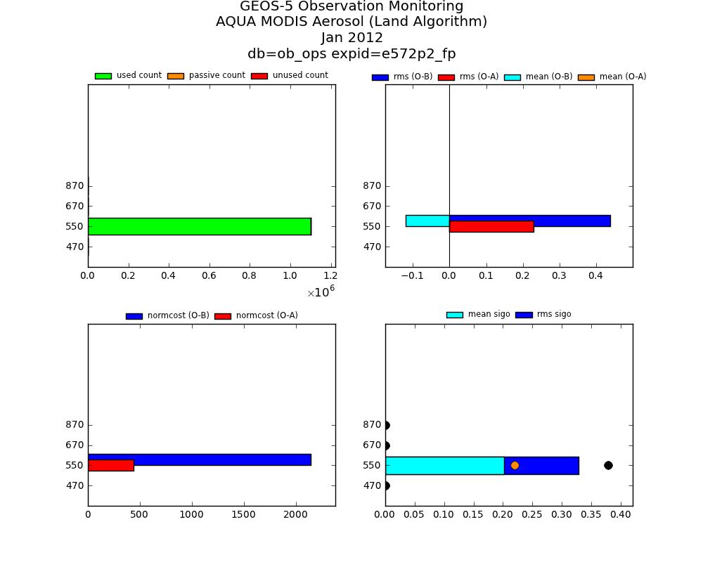
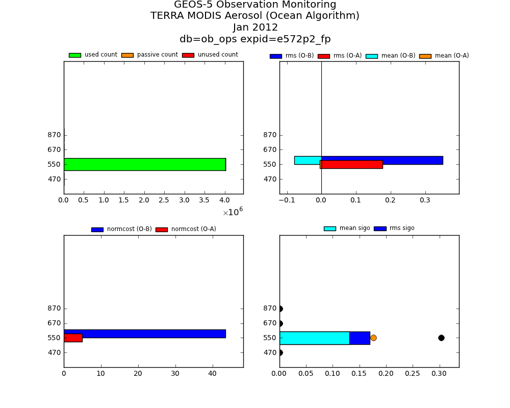
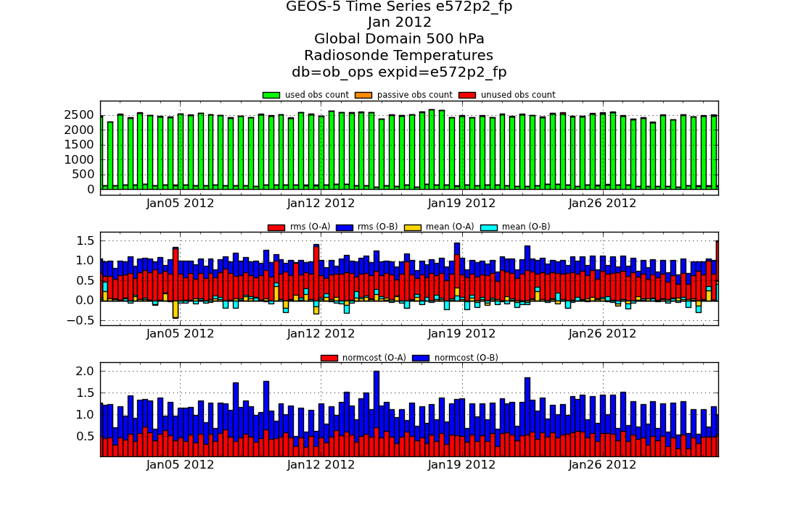
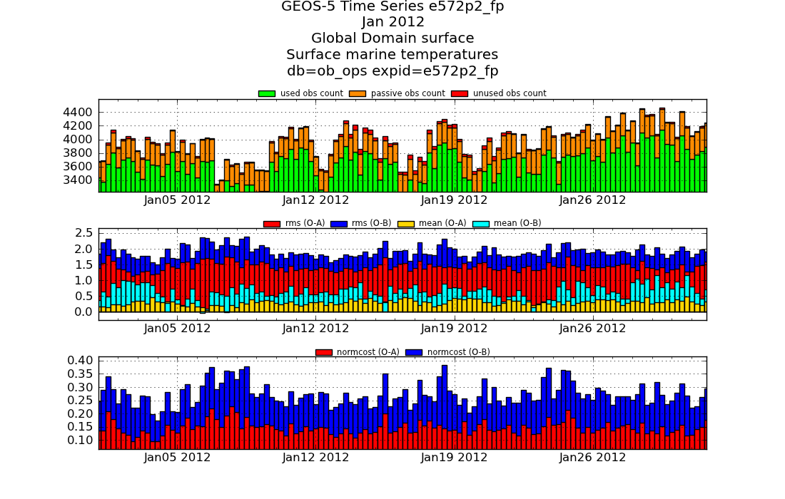

You can compute statistics for standard observations using diag.ods files generated by your experiment and plot the results in a way which is similar to the way this was done by the matlab utility obs2html.
You can find an example comparable to the examples in this chapter:
https://gmao.gsfc.nasa.gov/intranet/science/gms/e572p2_fp/TERRA_html/obs2html/Y2012/M01/conv/
In summary, you can download the following scripts and configuration files:
and read the rest of the documentation if required.
The sample script for computing observation statistics is the following one (compute_obs_stats.py):
The keywords which vary the most between experiments are defined at the top of the script for convenience.
warning: please make sure that there is no comma (,) at the end of the lines 3 to 7 (after the constants) as this would cause an error with a message which is not very clear. Explanation of the script:
- line 1 is necessary to tell Python which module(s) to use
- line 3 is the source, it defines which configuration file is used to find source ODS files, please see Notes on customizing the ‘compute’ scripts to see how to customize this.
- line 4: the official pre-defined database for research experiment statistics for observations,
- lines 5 to 6 should be straightforward,
- line 7: filename is the name of the file defining which observation groups should be included in the calculation of staticstics, you can obviously refine the definition for each experiment, in this case we use (obs_compute.def):
- line 15: the domain names you want to compute statistics on (this is the only dimension which is pre-defined at compute time, all the other dimensions can be aggregated later). To find out about pre-defined domains, use the command spy_doc domains.
- lines 17 to 36: different groups of observations are defined, basically this enables you to define different variables and statistics to compute on different kind of observations, used, passive and unused.
note: in order to find out the list of available statistics, you can issue the command spy_doc statistics which displays the list of available statistics for each type of data. The current output of the command is:
Available statistic per module: product : sum product : mean score : rms score : cor obsstat : count obsstat : rms obsstat : beneficial obsstat : sum obsstat : impact_per_anl obsstat : count_per_anl obsstat : rate obsstat : impact_per_ob obsstat : sumsquare obsstat : esigb obsstat : esigo obsstat : fractional_impact obsstat : normcost obsstat : concat obsstat : mean generated on 2012-05-18 15:22:14
generated on 2012-05-18 01:05:50
note: in order to find out the list of available domains, you can issue the command spy_doc domains which displays the list of available domains and their geographical coordinates. The current output of the command is:
Available domains (South, West, North, East): arabia : 12.5, 25.0, 35.0, 57.5 asia : 25.0, 45.0, 80.0, -170.0 atlantic : -15.0, -60.0, 15.0, 10.0 austnz : -45.0, 120.0, -12.5, 175.0 australia : -44.5, 112.0, -10.0, 156.25 austtrop : -15.0, 115.0, -2.0, 150.0 baltic : 53.0, 10.0, 66.0, 31.0 c.afr : -12.5, 5.0, 12.5, 42.5 e.asia : 25.0, 102.5, 60.0, 150.0 e.trop.pac : -20.0, -140.0, 10.0, -90.0 europe : 35.0, -12.5, 75.0, 42.5 global : -90.0, -180.0, 90.0, 180.0 ind.oc : -10.0, 50.0, 30.0, 100.0 india : 5.0, 75.0, 32.5, 102.5 indian : -15.0, 30.0, 15.0, 110.0 indonesia : -12.5, 102.5, 17.5, 132.5 med : 30.0, -6.0, 46.0, 36.0 n.amer : 20.0, -140.0, 60.0, -60.0 n.atl : 25.0, -70.0, 65.0, -10.0 n.europe : 55.0, 5.0, 75.0, 35.0 n.hem : 20.0, -180.0, 90.0, 180.0 n.hem.full : 0.0, -180.0, 90.0, 180.0 n.hem.mid : 35.0, -180.0, 65.0, 180.0 n.pac : 25.0, 145.0, 60.0, -130.0 n.pole : 65.0, -180.0, 90.0, 180.0 n.subtropics : 20.0, -180.0, 35.0, 180.0 nw.afr : 12.5, -22.5, 35.0, 12.5 pacific : -15.0, -90.0, 15.0, 120.0 s.afr : -47.5, 10.0, -12.5, 52.5 s.amer.n : -12.5, -85.0, 17.5, -55.0 s.amer.s : -57.5, -80.0, -12.5, -42.5 s.hem : -90.0, -180.0, -20.0, 180.0 s.hem.full : -90.0, -180.0, 0.0, 180.0 s.hem.mid : -65.0, -180.0, -35.0, 180.0 s.pole : -90.0, -180.0, -65.0, 180.0 s.subtropics : -35.0, -180.0, -20.0, 180.0 se.europe : 32.5, 10.0, 45.0, 32.5 sw.europe : 32.5, -15.0, 45.0, 10.0 trop.atl : -45.0, -60.0, 45.0, 10.0 trop.ind : -45.0, 30.0, 45.0, 119.0 trop.pac : -45.0, -90.0, 45.0, 120.0 tropics : -20.0, -180.0, 20.0, 180.0 generated on 2012-05-18 14:53:47
Many plots and types of plots can be used to display statistics from the database, once computed and stored, your are invited to look at Observation statistic - plotting to explore the possibilities. We are presenting here two more elaborated plots which display data in a very similar way to obs2html.
The first plot presents an overview for each observing system of different types of statistics (overview.py):
This script generates, amongst others, the following plots:




Explanation of the script:
- as before, the keywords which change more often between different experiements are at the top of the script,
- this script describes one document which contains four different plots (all of these are of the class levelplot), the filename introduced in the document’s plotdata specifies a collection of observing systems to plot, therefore the document will produce four plots on the same page (see line 159) for each observing system,
- line 12: graphics attributes can be specified using this syntax. The parameter yaxis.absolute_max = 8 means that even if the maximum values on the y axis is less than 8 (levels), we want to pretend that there are 8 levels. This is a trick to avoid displaying thick bars for surface observations or systems with few levels,
- line 16: level = ‘all’ means for each system, use all the know levels for that particular system,
- lines 18 to 31 define three curves which are stakedbars (they will stack on top of each other in the order specified), the count of obsvervations will be displayed for three type of data for each system: used, passive and unused.
- lines 36 to 43 define different parameter for the legend. These are documented in plotlegend. Please note that loc = ‘outside top’ does not exist in matplolib, it is a new location introduced by SemperPy which displays the legend at the top of the plot, outside the plotting area,
- lines 48 to 57, this defines the second plot, only one curve is defined, but the values for keywords variable and statistic generate four combinations, therefore there will be four curves in that plot (shiftedcurve, because they are staggered).
note: please note that on line 52, usage = [“used”,”passive”] means that we aggregate statistics for used data together with the statistics for passive data. This is to offer compatibility with the plots generated by obs2html, however it may well be that the best practice is to only display statistics for used data.
- lines 92 to 145, this defines the fourth plot with four curves. These are defined manually because it is not possible to describe combinations like for plots 2 and 3. The text should be self-explanatory.
- lines 157 to 158, since we have 4 plots on one single page, it is more effective to only have one title at the top of the page. Line 157 tells SemperPy that the document will generate the title (and automatically turns off titles in the plots). Line 158 customizes the default template of the document, we include an additional line showing the database used and the experiment id,
- line 162 is a template for the filenames to generate, one png file for each observing system.
The second plot presents timeseries for one particular bin (here pressure levels) for each observing system (timeseries_obs.py):
This script generates, amongst others, the following plots for pressure level 500 hPa for radiosonce temperatures and surface for surface marine temperatures (in this case, all existing pressure levels for each observing is generated:


Explanation of the script: this script is very similar to the previous one, the same data is displayed in a different way in three different plots.
To date, here are the known quality control flags on observation statistics:
- 0: used observation
- 1 or 7 (depending on the type of observation): passive data
- 2: rejected by GSI
- 3: too large sigo, please note that this flag is not set by the data assimilation system, it is set by SemperPy when computing statistics from ODS files, using a configuration file defining thresholds for sigo.
- 36: set by the data assimilation system.
In order to be resilient in time, SemperPy defines three types:
- used (qcexcl = 0)
- passive (qcexcl = 1 or qcexcl = 7)
- unused (qcexcl != 1 and qcexcl != 7)
When SemperPy computes statistics for unused data, it stores the statistics in the database together with the qcexcl flag found. When requested to plot unused, SemperPy aggregates data which have not the used or passive flags. However, different unused statistics are stored with their original qcexcl value as a string: 2, 3, or 36 (to date).
When plotting, the user can request usage = ‘unused’ to aggregate all unused data, or specific flags, such as ‘2’, ‘3’, or ‘36’. The good news is that if new flags are implemented for data rejection, SemperPy will be able to cope with those automatically and still handle the flag unused consistently. If more flags were defined for either used or passive data, then there would be a need to modify the code (gmaopy.obs.odsengine).
{kind=link}
{kind=link}
{kind=link}
{kind=link}
{kind=link}
{kind=link}